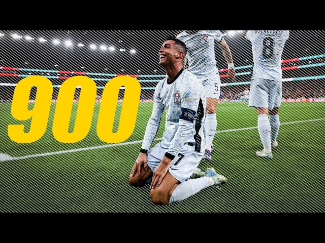
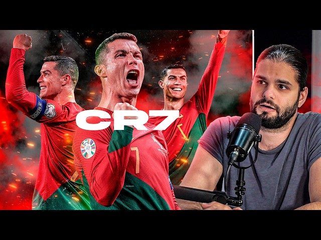

BIOGRAFIA DE CRISTIANO RONALDO
Cristiano Ronaldo dos Santos Aveiro nació el 5 de febrero de 1985 en Funchal, Madeira, Portugal en una familia de esccasos recursos y con problemas familiares como el alcoholismo de su padre, a pesar de eso desde una edad temprana, mostró un talento excepcional para el fútbol, lo que lo llevó a ser uno de los mejores jugadores del mundo.
Considerado con frecuencia el mejor futbolista y el más completo, es el mayor goleador de todos los tiempos en partidos oficiales, y sin duda uno de los mejores de todos los tiempos. Es uno de los futbolistas más laureados de la historia, habiendo ganado, entre otras distinciones, cinco veces el Balón de Oro, cinco premios de la FIFA al mejor jugador del mundo y cuatro Botas de Oro. Obtuvo también los premios The Best FIFA en 2016 y 2017. Además, forma parte del Dream Team del Balón de Oro. También fue el primer ganador del premio Premio Puskás en 2009.
Inicio de su Carrera
Ronaldo comenzó su carrera profesional en el Sporting de Lisboa a los 17 años, donde impresionó con su habilidad y rapidez. A los 18 años, se trasladó al Manchester United en 2003, donde alcanzó gran notoriedad mundial, posterior a ello en 2009 se trapaso a el Real Madrid donde vivio su epoca dorada, en 2018 llego a la Juventus por 100M de euros donde tuvo exito domestico en la serie A, en el 2021 volvio al Manchester United donde siguio con un exito moderado, para el 2023 llego al Al-Nassr donde permanece hasta la actualidad (2025) manteniendo un buen nivel.
SU TRAYECTORIA
- Manchester United (2003-2009): 3 Premier League, 1 Champions League, 1 FA Cup.
- Real Madrid (2009-2018): 4 Champions League, 2 La Liga, 2 Copas del Rey.
- Juventus (2018-2021): 2 Serie A, 1 Coppa Italia.
- Manchester United (2021-2022): Regreso al club y sigue siendo una figura importante.
SU ÉXITO INTERNACIONAL
Con la selección de Portugal, Cristiano Ronaldo ha logrado múltiples títulos, incluyendo la Eurocopa 2016 y la Liga de Naciones de la UEFA 2019, consolidándose como uno de los mejores jugadores en la historia del fútbol mundial.
PRINCIPALES TITULOS Y RECONOCIOMIENTOS
- 5 Balones de Oro
- 5 Champions League
- 1 Eurocopa
- 1 UEFA nations league con Portugal
- Actualmente cuenta con mas de 900 goles en su carrera profesional
LOS 5 BALONES DE ORO
LAS 5 CHAMPIONS LEAGUE
1 EUROCOPA
1 UEFA NATIONS LEAGUE
TODOS SUS GOLES
A CONTINUACION UN VIDEO EXPLICANDO LA VIDA DE CR7
 Leer más sobre Cristiano Ronaldo